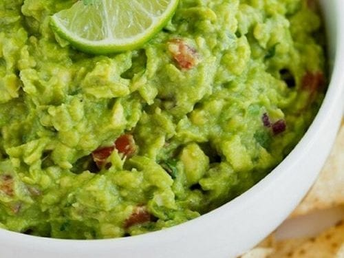

Guacamole

Description
Ingredients
- 2 avocados, peeled and pitted
- 1 cup chopped tomatoes
- 1/4 cup whole onion
- 1/4 cup chopped cilantro
- 2 tablespoons lemon juice
- 1 jalapeno pepper, seeded and minced (Optional)
- Salt and ground black pepper to taste
Directions
- Mash avocados in a bowl until creamy.
- Mix tomatoes, onion, cilantro, lemon juice, and jalapeno pepper into mashed avocado until well combined; season with salt and black pepper.